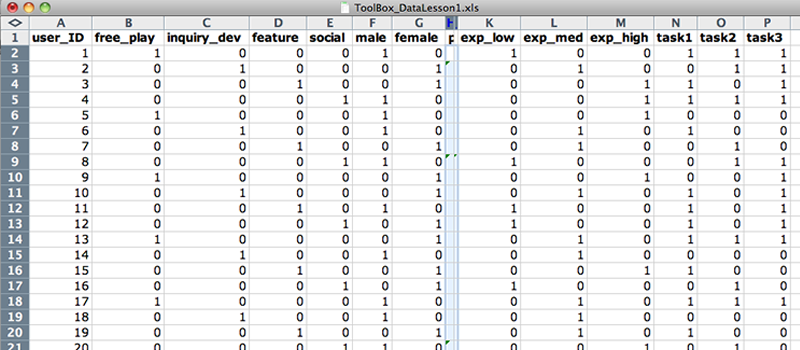
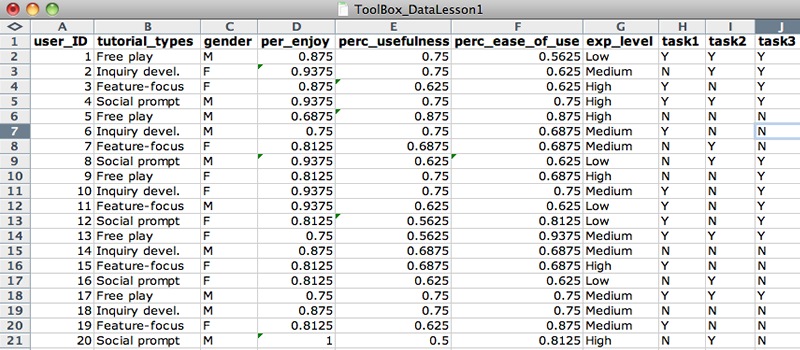
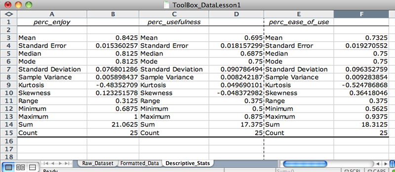
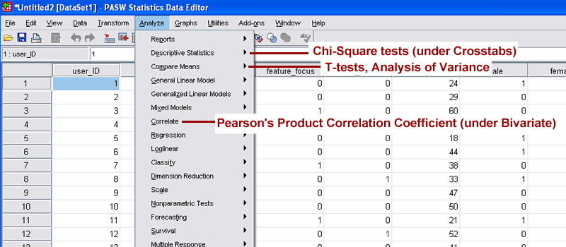
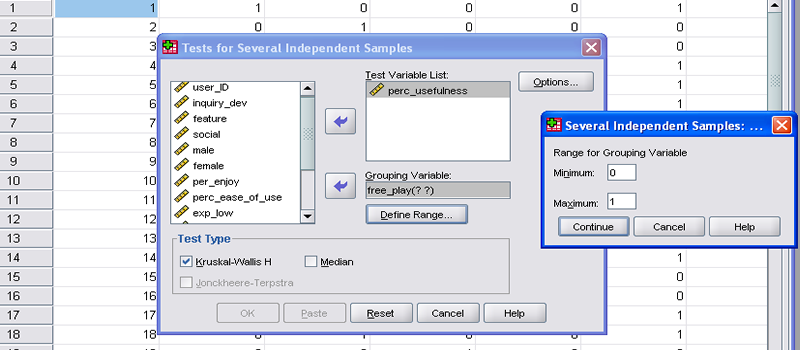
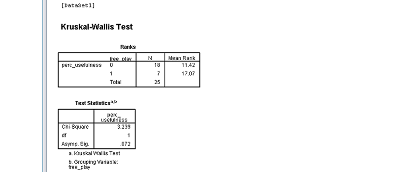

Learning Objectives
After completing the 30-minute lesson, you will be able to to:
- Format raw research data in an Excel spreadsheet for efficient analysis
- Run basic descriptive statistics in Excel
- Prepare the document for statistical analysis in the software package PASW
Format data for analysis
Make sure the computer you are working on has Microsoft Excel installed. Open the document ToolBox_DataLesson.xls in Excel and follow along with the lesson, taking action as instructed.
In the Raw_Dataset spreadsheet, the name of each variable has been entered in the first row of each column.
- Each variable name must be different from other variable names.
- The first variable (in column A) is a unique identifier.
- Variable names must start with a letter (not numbers or special characters), so change
4th_instructiontofourth_instruction. - Name variables so that they are intuitive to you. Therefore, change
useandusefultoperc_ease_of_useandperc_usefulness, respectively. - Your spreadsheet should look like Figure 1, and it should now be readily apparent that Column F refers to Perceived Usefulness and Column G refers to Perceived Ease of Use.

Data values, or rows, have been input for each subject in the experiment.
- Decide on input conventions and stick to them. In gender, change the "female" value to "F".
- Separate data into component values whenever possible by adding new columns. For example, tasks_completed values (Y/Y/N) can be broken up into three components. So, add columns task1, task2, and task3, and reformat values appropriately.
- Double-check to ensure no data entry errors have been made, then delete the old tasks_completed column.
- Your Raw_Dataset spreadsheet should now look like Figure 2.

Replace categorical data values with "0" or "1" (0=no, 1=yes) to indicate whether or not the value is represented for the given subject/item. This makes the categorical values dichotomous, which gives the researcher maximum flexibility in testing for relationships or correlations.
- Copy the Raw_Dataset values into the Sheet2 tab. Rename this sheet Formatted_Data.
- In the Formatted_Data sheet, add new columns with Insert > Columns for each distinct value in categorical data columns (tutorial_types, gender, exp_level, task1, task2, and task3). You do not have to add a new column for task1, task2, and task3 because their values are already dichotomous.
- Rename columns according to each possible categorical value. Copy and paste the values from the original column.
- Replace dichotomous data values with "0" or "1" (0=no, 1=yes) using the replace function: Edit > Replace.
- Your Formatted_Data spreadsheet should now look like Figure 3.
![[IMAGE: Tutorial type, gender, experience, and task categorical values have been formatted as dichotomous variables.]](images/datalesson_fig3 (1).png)
Run descriptive statistics
Run descriptive (summary) statistics on the dataset and output results in a new spreadsheet. If necessary, rearrange columns so that data requiring summary, those with continuous values, are adjacent. (In the spreadsheet, the continuous values of perc_enjoy, perc_usefulness, and perc_ease_of_use are already adjacent.)
Write down the "input range" (i.e. H2:J26) of the data requiring summary, making sure not to include variable labels.
- Go to Tools > Add-Ins... and make sure Analysis ToolPak is checked. Click OK.
- Go to Tools > Data Analysis and select Descriptive Statistics. Click OK.
- Enter the input range in the blank and check Summary Statistics. Click OK.
The descriptive statistics summary will output in a new sheet. Rename this spreadsheet Descriptive_Stats. Label the output according to the variables. For example, Column 1 should be perc_enjoy. Your Descriptive_Stats spreadsheet should now look like Figure 4.

Analyzing descriptive statistics is a great way to start appraising a dataset before running inferential statistics. What insights about the dataset can you glean from the summary statistics for perc_usefulness and perc_ease_of_use?
Run inferential statistics
Open PASW and upload the spreadsheet. (IIT labs in Stuart Building, room 112, have PASW. You can also download a 30-day free trial.)
- When PASW starts, it will prompt you for a data source. Select Open an existing data source > More Files...
- Set the file type to Excel, then find and open the file.
- From the list, select the Formatted_Data worksheet. Click OK. You should now see the dataset.
The most commonly used statistical methods and tests are found under the Analyze menu in the toolbar.
Figure 5 shows where to find some common statistical methods and tests. Under PASW's Analyze menu, see if you can also find the following:
- Wilcoxon-Mann-Whitney test
- Simple linear regression
- Non-parametric correlation

Use your prior knowledge or the Choosing the Correct Statistic resource to determine which statistic to run to find whether there is a significant difference in perc_usefulness between free_play and other tutorial types.
You should have determined that the Kruskal-Wallis one-way analysis of variance is the appropriate test. Go to Analyze > Nonparametric Tests > K Independent Samples... and set the test up as shown in Figure 6.

Finally, interpret and share the results. This is the most important step in statistical analysis. According to the Kruskal-Wallis test, H(4) = 1.261, p > .05, which means that there is no statistically significant difference in the perceived usefulness between free_play and other tutorial types.

That's it!
You have successfully formatted a set of raw data, run descriptive statistics, and run an inferential statistical test. For more information on statistical analysis, check out the following resources:
- Choosing the Correct Statistic from the Institute for Digital Research and Education at UCLA
- OnlineStatBook - Electronic Statistics Textbook
- Elementary Statistics Concepts from StatSoft